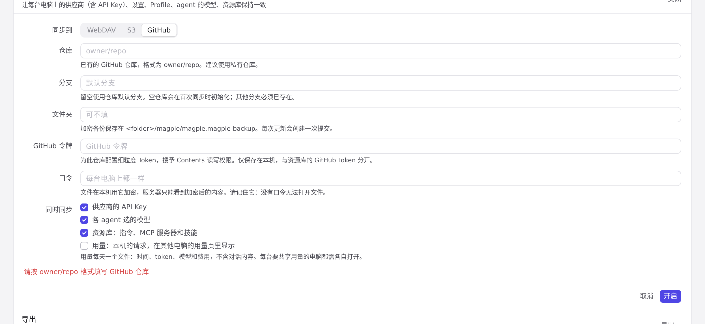
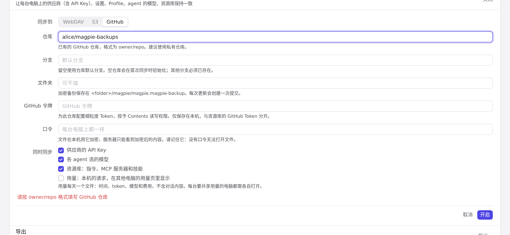

#1130 界面预览
commit 6b5b1c6 · 回到 PR · 设置 →「同步与备份」把 GitHub 加为第三种同步后端：条目名改为「WebDAV / S3 / GitHub 同步」，同步表单的「同步到」多出 GitHub 一项，选中后显示仓库、分支、文件夹和独立的 GitHub Token 字段，并有仓库格式与 Token 的校验提示。
红线是鼠标走过的轨迹，红色圆环是一次点击；底部文字是这一步在做什么。空格暂停，← → 逐段查看。
 同步与备份里的 GitHub · 同步条目的名称与说明
同步与备份里的 GitHub · 同步条目的名称与说明
 同步与备份里的 GitHub · 选 GitHub 后表单里的字段
同步与备份里的 GitHub · 选 GitHub 后表单里的字段

仓库地址的校验提示 · 表单底部的提示

仓库地址的校验提示 · 填好仓库后的表单